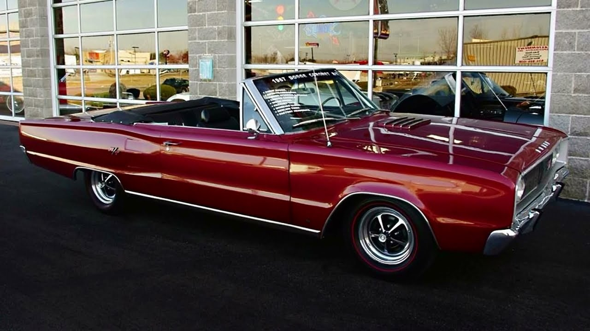
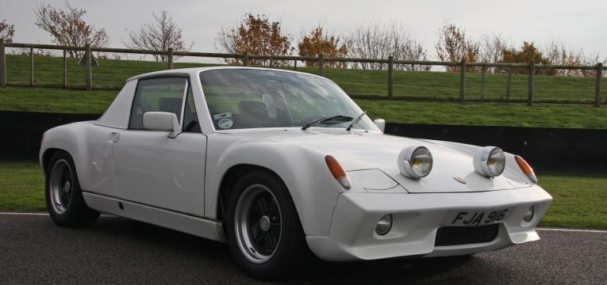
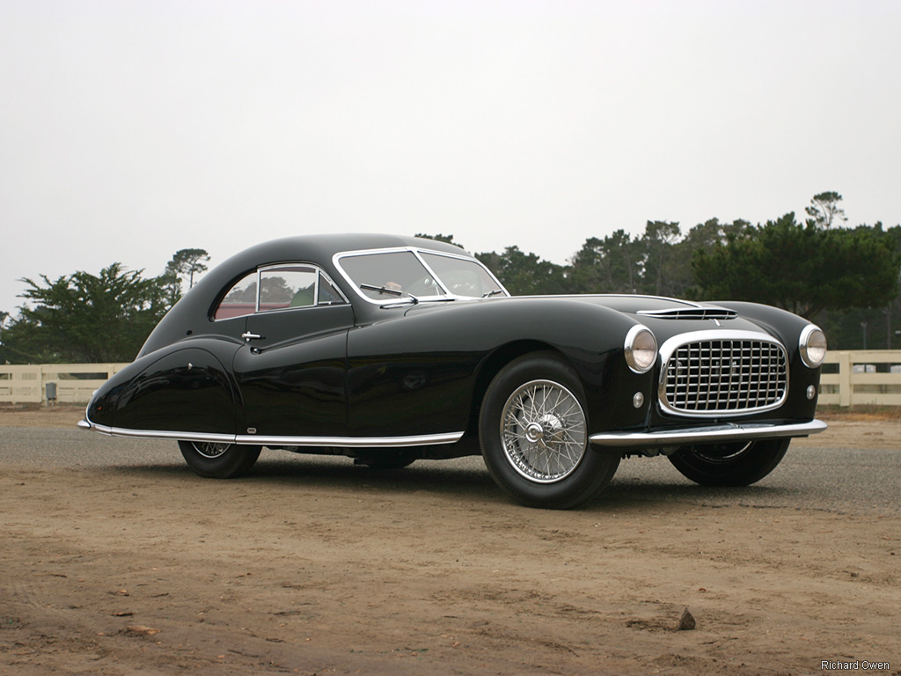
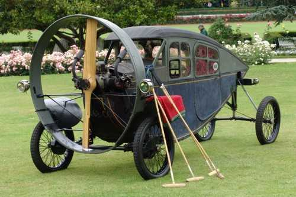

Os Carros Antigos ou Clássicos Mais Raros do Mundo
10 - Packard Panther
Foram apenas produzidos quatro exemplares, em 1954, deste carro que tinha como objetivo ser um
protótipo dos futuros
modelos da empresa. O Packard Panther tinha estrutura em fibra de vidro e luzes traseiras
Clipper. Hoje, existem dois
destes carros, sendo que um deles foi vendido em leilão, em 2006, por 335.148 mil euros.
9 - Dodge Coronet Convertible

É um dos carros desportivos americanos mais raros do mundo, tendo sido produzidos dois em 1967
e dois em 1970. Embora o
Dodge Coronet Convertible não seja um modelo com um design extraordinário ou com
características técnicas excepcionais,
o fato de ser raro torna-o famoso.
8 - Porsche 916

É o modelo mais exclusivo de sempre da fabricante alemã e continua a ser um dos carros mais
raros do mundo. Foram
produzidos 11 exemplares, em 1972, e todos eram protótipos. Nessa altura, o Porsche 916 era o
modelo da marca mais
rápido e leve de sempre, atingindo uma velocidade máxima de 233 km/h. Atualmente, estima-se que
ainda existam alguns
Porsche 916 originais nas mãos de colecionadores, pois um deles foi vendido recentemente por
2,3 milhões de euros.
7 - Talbot Lago Grand Sport

Entre 1903 e 1994, a fabricante Talbot passou pelas mãos de diversos proprietários, incluindo a
Peugeot e a Chrysler. A
empresa é conhecida por produzir veículos para utilização diária, mas também carros de Fórmula
1. Apesar de ter estado
por diversas vezes à beira da falência, a Talbot produziu o Lago Grand Sport.Lançado em 1948, o
Talbot Lago Grand Sport
tinha uma versão de corrida e uma de luxo, tendo sido produzidos apenas 12 carros na versão de
luxo. É um dos carros
antigos mais raros em todo o mundo e, por essa razão, o último Talbot Lago Grand Sport atingiu
de 2,3 milhões de euros
num leilão.
6 - 1921 Helica de Leyat

Os meios de comunicação deram-lhe o nome “O pássaro sem asas”, no dia em que foi apresentado. O
1921 Helica de Leyat
foi produzido em França e desenhado por Marcel Leyat, um fabricante francês de automóveis. Este
modelo é mítico pelo
seu design extraordinário e originalidade, pela velocidade que atingiam e pelo facto de não ter
um motor normal, mas
uma grande hélice que faz com que pareça um avião.Foram produzidos 30 exemplares do 1921 Helica
e todos os que ainda
existem fazem parte de coleções privadas. Este modelo, se estiver em bom estado, está avaliado
em 18,6 milhões de
euros.